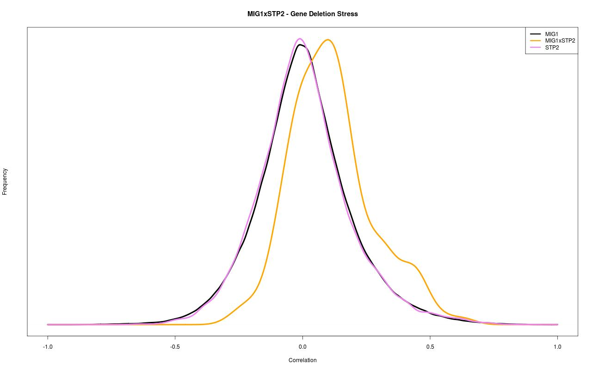
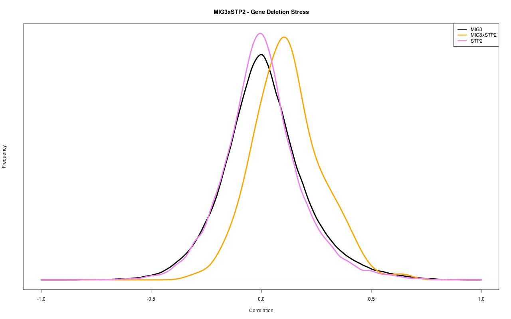
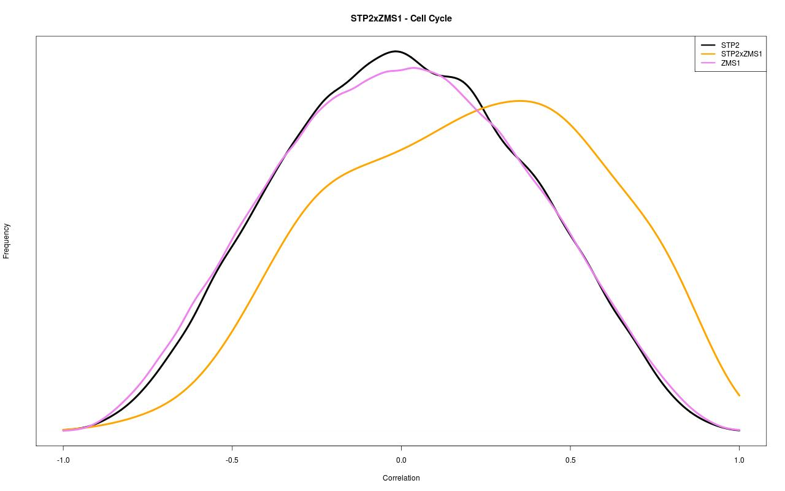

← STP2 record / TRANSCRIPTION FACTOR INTERACTIONS
STP2 interaction figures.
Original co-expression distribution plots for the transcription factor pairs in this ScerTF record.





Original co-expression distribution plots for the transcription factor pairs in this ScerTF record.


